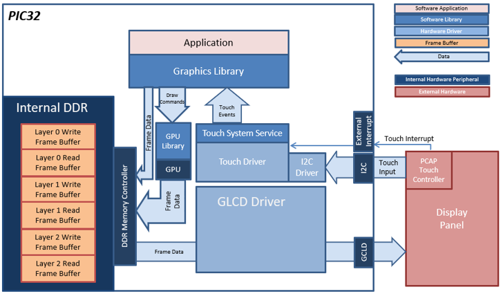
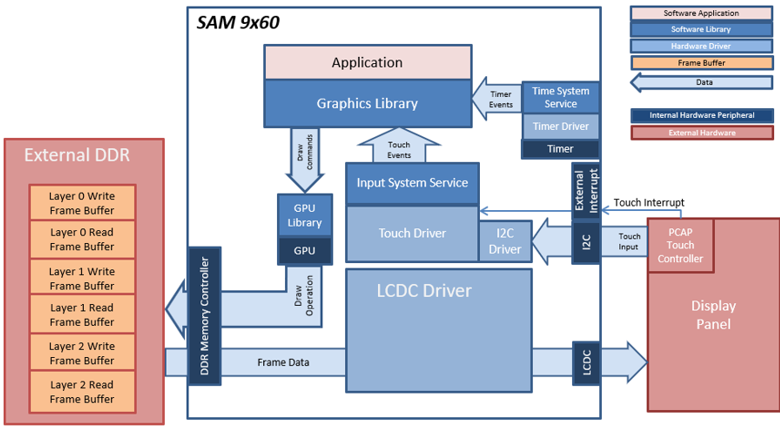
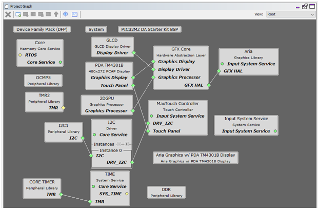
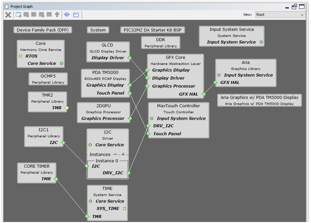

This application presents a vehicle dashboard screen that has a gauge to show the engine RPM (tachometer), dynamic text to show speed and distance traveled and images for indicator like turn signals, etc. The base layer contains the background image with the dashboard scale and other graphics. The upper layers contain the needle, the dynamic text, fuel gauge and indicators.
Architecture
The project uses a draw surface widget as a container to draw the gauge needle using lines. When the user touches the screen, a touch event is sent to the application. The application updates the values of the tachometer, speedometer and fuel gauge. The needle is cleared and redrawn every time the tachometer value changes. The speed, distance and fuel gauge are also updated. Label widgets are used to show the speed and distance, while image widgets are used to show the indicators and fuel gauge.
lcdc_rgba8888_mxt_a5d2_wqvga, lcdc_rgba8888_mxt_a5d2_wvga
The application uses the 3 layers in the LCDC display controller to compose the final screen. Each layer uses double-buffering to eliminate tearing. When the screen needs to be updated, the graphics library updates the frame on the write buffer while the LCDC display controller sends the read buffer content to the display panel. When the graphics library is done updating, the write buffer is swapped with the read buffer and its contents are pushed out to the display controller.
Each frame buffer uses 32-bit per pixel, and each pixel has its own alpha channel. This allows the sections of the upper layers to be transparent and show the contents of the layers underneath.
User touch input on the display panel is received thru the PCAP capacitive touch controller, which sends a notification to the Touch Input Driver. The Touch Input Driver reads the touch information over I2C and sends the touch event to the Graphics Library thru the Input System Service.

Demonstration Features
• LCDC display controller with multiple HW layers
• Input system service and driver
• Time system service, timer-counter peripheral library and driver
• I2C driver
• 32-bit RGBA8888 color depth support
• Draw surface, image, label widgets
• Backlight PWM control
glcd_rgba8888_mxt_mzda_intddr_sk, glcd_rgba8888_mxt_mzda_intddr_sk_wvga

Demonstration Features
• GLCD display controller with multiple HW layers
• Nano2D Graphics Processor Unit (GPU)
• Input system service and driver
• Time system service, timer-counter peripheral library and driver
• I2C driver
• 32-bit RGBA8888 color depth support
• Draw surface, image, label widgets
• Software-based image rotation
• Backlight PWM control
lcdc_rgba8888_mxt_9x60_wvga

Demonstration Features
aria_dashboard_9x60_sk_wvga
• LCDC display controller with multiple HW layers
• GFX2D Graphics Processor Unit (GPU)
• Input system service and driver
• Time system service, timer-counter peripheral library and driver
• I2C driver
• 32-bit RGBA8888 color depth support
• Draw surface, image, label widgets
• Software-based image rotation
• Backlight PWM control
MPLAB Harmony Configurator Setup
The Project Graph diagram below shows the Harmony components that are included in this application. Lines between components are drawn to satisfy components that depend on a capability that another component provides.
First, add the “SAM A5D2 XPlained Ultra BSP” into the project. Then, add “Aria Graphics w/ PDA TM4301B Display” Graphics Template component to the project if using a 4.3” WQVGA TM4301b display or the “Aria Graphics w/ PDA TM4301B Display” Graphics Template component to the project if using a 5” or 7” WVGA TM4301b display. The template will automatically add the components needed for a graphics project and resolve their dependencies and configure the pins needed to drive the external peripherals like the display and the touch controller.
glcd_rgba8888_mxt_mzda_intddr_sk/glcd_rgba8888_mxt_mzda_intddr_sk_wvga
First, add the “PIC32MZ DA Starter Kit BSP” into the project. Then, add “Aria Graphics w/ PDA TM4301B Display” Graphics Template component to the project if using a 4.3” WQVGA TM4301b display or the “Aria Graphics w/ PDA TM4301B Display” Graphics Template component to the project if using a 5” or 7” WVGA TM4301b display. The template will automatically add the components needed for a graphics project and resolve their dependencies and configure the pins needed to drive the external peripherals like the display and the touch controller.
aria_dashboard_mzda_intddr_sk_meb2_wqvga

aria_dashboard_mzda_intddr_sk_meb2_wvga

For this project, the GFX Core component has been configured to enable “Double Buffer Mode” for double-buffering.

lcdc_rgba8888_mxt_a5d2_wqvga

lcdc_rgba8888_mxt_a5d2_wvga

The GFX template automatically sets the heap size to 32768 bytes. The heap is set in the System component properties as shown in the image below.

For this project, the GFX Core component has been configured to enable “Double Buffer Mode” for double-buffering. Several options in “Draw Pipeline Stages” that are not required for this project have been disabled to improve performance. These options are highlighted in green in the image below.
|
Name |
Description |
|
This section identifies, lists and describes the available configurations for the Aria Dashboard demonstration. | |
|
This section describes how to configure the supported hardware. | |
|
This section provides information on how to run and use the application. |
|
MPLAB® Harmony Graphics Suite Applications
|